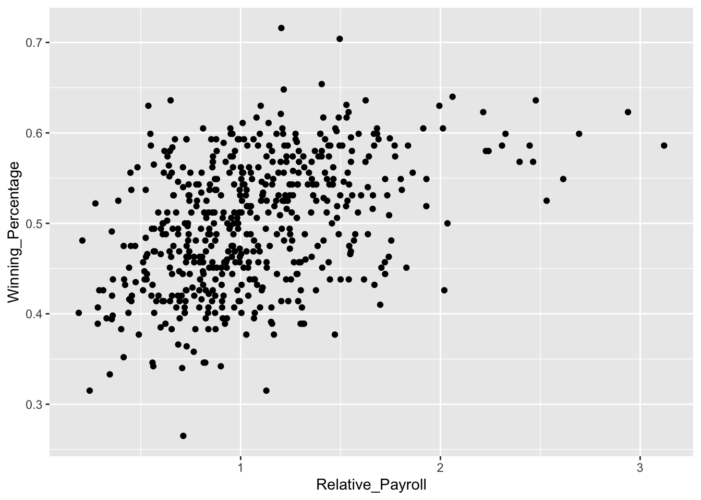

In this problem set, you will practice using the pipe %>% and grouped calculations with batting statistics taken from the Lahman dataset. We will compute the same statistics as we did in Problem Set 3 and also standardize these statistics within year, year and league, and also historical era.
To load the batting data into R, we can do the following
Unfortunately, some statistics like hit-by-pitch (HBP) were not recorded in the earlier decades of baseball. In the tbl, these missing values are designated NA. To see some of these, we can run the following code:
> batting %>%
+ select(playerID, yearID, teamID, AB, BB, HBP, SH, SF, IBB, GIDP)
# A tibble: 107,429 x 10
playerID yearID teamID AB BB HBP SH SF IBB GIDP
<chr> <int> <fct> <int> <int> <int> <int> <int> <int> <int>
1 abercda01 1871 TRO 4 0 NA NA NA NA 0
2 addybo01 1871 RC1 118 4 NA NA NA NA 0
3 allisar01 1871 CL1 137 2 NA NA NA NA 1
4 allisdo01 1871 WS3 133 0 NA NA NA NA 0
5 ansonca01 1871 RC1 120 2 NA NA NA NA 0
6 armstbo01 1871 FW1 49 0 NA NA NA NA 0
7 barkeal01 1871 RC1 4 1 NA NA NA NA 0
8 barnero01 1871 BS1 157 13 NA NA NA NA 1
9 barrebi01 1871 FW1 5 0 NA NA NA NA 0
10 barrofr01 1871 BS1 86 0 NA NA NA NA 0
# … with 107,419 more rowsA common convention for dealing with the missing values when computing \(\text{PA}\) is to replace the NA with a 0. To do this, we can use the function replace_na() within a pipe as follows.
> batting <-
+ batting %>%
+ replace_na(list(IBB = 0, HBP = 0, SH = 0, SF = 0, GIDP = 0))
> batting %>% select(playerID, yearID, teamID, AB, BB, HBP, SH, SF, IBB)
# A tibble: 107,429 x 9
playerID yearID teamID AB BB HBP SH SF IBB
<chr> <int> <fct> <int> <int> <dbl> <dbl> <dbl> <dbl>
1 abercda01 1871 TRO 4 0 0 0 0 0
2 addybo01 1871 RC1 118 4 0 0 0 0
3 allisar01 1871 CL1 137 2 0 0 0 0
4 allisdo01 1871 WS3 133 0 0 0 0 0
5 ansonca01 1871 RC1 120 2 0 0 0 0
6 armstbo01 1871 FW1 49 0 0 0 0 0
7 barkeal01 1871 RC1 4 1 0 0 0 0
8 barnero01 1871 BS1 157 13 0 0 0 0
9 barrebi01 1871 FW1 5 0 0 0 0 0
10 barrofr01 1871 BS1 86 0 0 0 0 0
# … with 107,419 more rowsThe syntax for replace_na() is a bit involved but the basic idea is you have to specify the value you want to replace each NA. When using replace_na() it is very important to remember to include the list(...) bit.
Load the Lahman data and run the above code to create the tbl Batting, which has replaced all of the NA’ in the columns IBB, HBP, SH, SF and GIDP`.
Using the pipe %>%, mutate(), filter(), and select(), create a tbl batting by:
mutate()) for plate appearances (PA), unintentional walks (uBB), singles (X1B), batting average (BA), on-base percentage (OBP), on-base plus slugging (OPS), and weighted On-Base Average (wOBA). Note that the formula for plate appearances is \(\text{PA} = \text{AB} + \text{BB} + \text{HBP} + \text{SH} + \text{SF}.\) Formulae for the remaining statistics are given in Problem Set 3.filter()zBA_all, zOPB_all, etc. Remember, you must re-define the standardize() function we wrote in Module 4> standardize <- function(x){ (x - mean(x))/sd(x)}
> batting <-
+ batting %>%
+ mutate(zBA_all = standardize(BA),
+ zOBP_all = standardize(OBP),
+ zOPS_all = standardize(OPS),
+ zwOBA_all = standardize(wOBA))batting by year and compute the standardized BA, OBP, OPS, and wOBA within each year. Now who are the best and worst batters according to the four measures? Name the columns containing these new standardized values zBA_year, zOBP_year, etc.> batting <-
+ batting %>%
+ group_by(yearID) %>%
+ mutate(zBA_year = standardize(BA),
+ zOBP_year = standardize(OBP),
+ zOPS_year = standardize(OPS),
+ zwOBA_year = standardize(wOBA))zBA_year_lg, zOBP_year_lg, etc.> batting <-
+ batting %>%
+ ungroup() %>%
+ group_by(yearID) %>%
+ mutate(zBA_year_lg = standardize(BA),
+ zOBP_year_lg = standardize(OBP),
+ zOPS_year_lg = standardize(OPS),
+ zwOBA_year_lg = standardize(wOBA))> batting <-
+ batting %>%
+ ungroup() %>%
+ mutate(HIST_ERA = case_when(
+ 1871 <= yearID & yearID <= 1892 ~ "Pioneer",
+ 1893 <= yearID & yearID <= 1919 ~ "Spitball",
+ 1920 <= yearID & yearID <= 1946 ~ "Landis",
+ 1947 <= yearID & yearID <= 1968 ~ "Baby Boomer",
+ 1969 <= yearID & yearID <= 1992 ~ "Artifical Turf",
+ 1993 <= yearID ~ "Camden Yards")) %>%
+ group_by(HIST_ERA) %>%
+ mutate(zBA_hist = standardize(BA),
+ zOBP_hist = standardize(OBP),
+ zOPS_hist = standardize(OPS),
+ zwOBA_hist = standardize(wOBA))Use mutate() and case_when() (just like we did in Module 3) to add a column called Hist_era to batting that records the historical era.
Group batting by Hist_era and standardize BA, OBP, OPS, and wOBA within historical era. Who are the best and worst batters now? Name the columns containing these new stanardized values zBA_hist, zOBP_hist, etc.
Remove the grouping you added in Problem 6.
Recall from Problem Set 2, we plotted the relative payroll of MLB teams against their winning percentage. In that problem set, we read in a file that had included the relative payroll for each team as a separate column. To get some additional practice with dplyr, we will read in a different dataset and re-compute these relative payrolls.
> standardize <- function(x){
+ mu <- mean(x, na.rm = TRUE)
+ sigma <- sd(x, na.rm = TRUE)
+ return( (x - mu)/sigma)
+ }We need to write another function in order to compute “relative payroll”. This function will take in a vector x, compute its median, and then divides every element of x by the median.
mlb_payrolls.Parsed with column specification:
cols(
Team = col_character(),
GM = col_character(),
Team_Payroll = col_double(),
Winning_Percentage = col_double(),
Year = col_double()
)Using the pipe %>%, group_by(), and mutate(), add a column to mlb_payrolls that contains the relative payroll for each team.
Make a scatterplot of winning percentage against relative payrolls. Comment on the relationship. Your scatterplot should be identical to one you made in Problem Set 2. 
Using the summarize() function, compute the average team payroll and relative payroll for each year. Save these results in a new tbl called payroll_avg.
Make a scatterplot that shows how team payrolls have evolved over the year. Similar to what we did in Module 4, add a line to this scatterplot that shows the average team payroll. Do the same thing for relative payroll. What do you notice about the average team payroll and relative payroll?
As you will see in coming lectures, correlation is a measure of the strength of the linear relationship between two variables. The closer to +1 or -1 the correlation between two variables is, the more predictable they are of each other. We can compute it using the cor() function. Using summary() and cor(), compute the correlation between relative payroll and winning percentage within each year. What do you notice about how the relationship between winning percentage and relative payroll changes year to year?
`summarise()` ungrouping output (override with `.groups` argument)
# A tibble: 18 x 2
Year cor
<dbl> <dbl>
1 1998 0.764
2 1999 0.699
3 2000 0.327
4 2001 0.338
5 2002 0.443
6 2003 0.415
7 2004 0.515
8 2005 0.497
9 2006 0.538
10 2007 0.495
11 2008 0.322
12 2009 0.504
13 2010 0.347
14 2011 0.408
15 2012 0.195
16 2013 0.330
17 2014 0.297
18 2015 0.281Without running the code, work with your teammates to see if you can figure out what the code below is doing.
> batting_2014_2015 <-
+ batting %>%
+ filter(yearID %in% c(2014, 2015)) %>%
+ group_by(playerID) %>%
+ filter(n() == 2) %>%
+ select(playerID, yearID, BA) %>%
+ arrange(playerID)batting_2014_2015.RData to the file “data/batting_2014_2015.RData”. We will return to this dataset in Lecture 4.